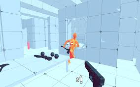

How to Play
Time Shooter 2 is a first-person shooter where time only moves when you do. That means you can stop and think during intense moments, but you still have to react fast when moving.
You start each level unarmed and surrounded by enemies. You’ll need to pick up weapons off the ground and use them wisely. Some enemies have guns, some throw things, and some charge at you. You can throw weapons after using them, which is useful if you’re cornered.
As you move, enemies will fire at you so dodging and planning each step is important. The game is all about timing, precision, and using the environment around you .
Later levels get harder with more enemies and less time to react, so it’s all about staying calm and making smart moves.
